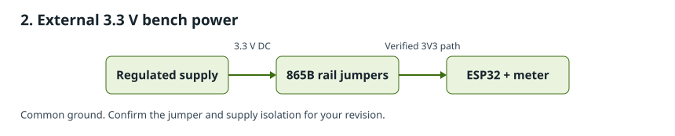
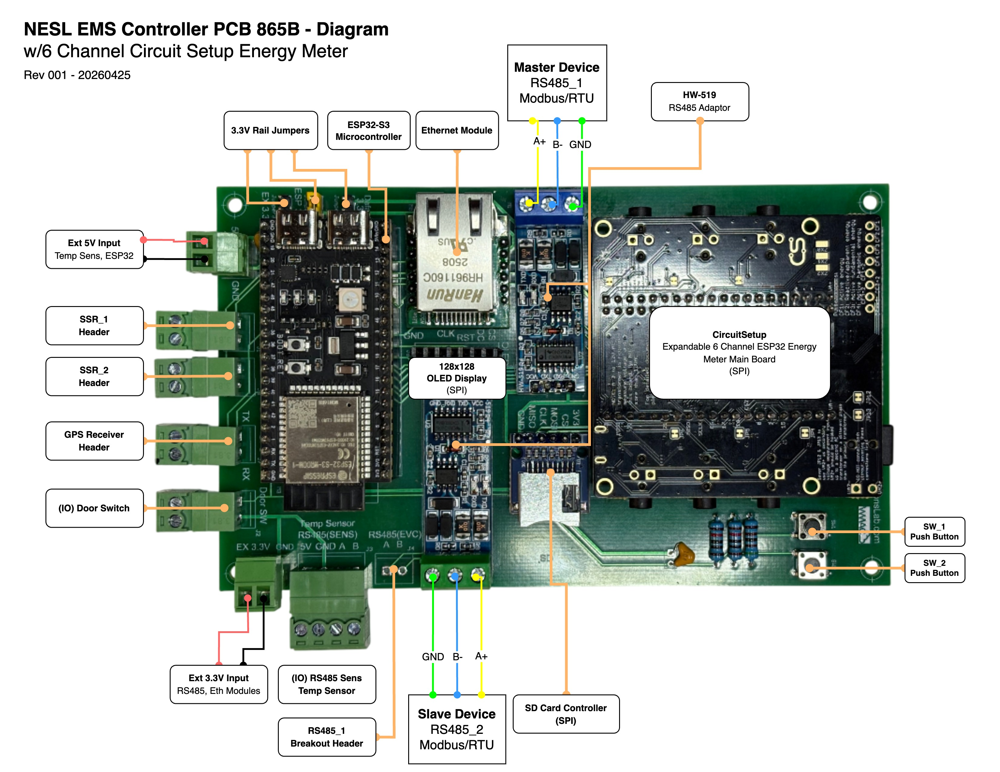
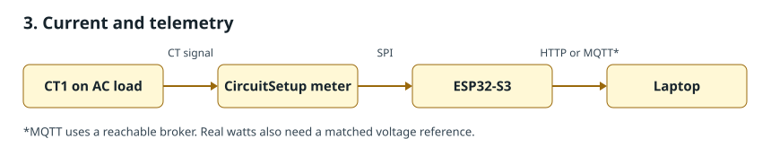

Street EMS bench tutorial
ISV Technology Committee · Power Africa 2026 follow-up · Nairobi, Kenya
Bring your Street EMS board, a laptop, a USB data cable and access to a 2.4 GHz Wi-Fi hotspot. Everyone can flash the ESP32 and verify Wi-Fi over USB. If you received a CircuitSetup meter and current transformers (CTs), follow along with the current readout once your bench power and meter connections are confirmed. Relays are optional and stay disconnected for this session.
1. Flash the ESP32 and join the hotspot
Terminal setup
Install Git even if you downloaded the firmware as a ZIP. PlatformIO uses Git to fetch some libraries. If you already use the PlatformIO extension in VS Code, use its built-in terminal for pio and skip the separate PlatformIO Core installation.
macOS · Terminal with Homebrew
brew install git platformio
pio --versionLinux · Ubuntu or Debian terminal
sudo apt update
sudo apt install git python3 python3-venv
python3 -m venv ~/.venvs/street-ems
source ~/.venvs/street-ems/bin/activate
python -m pip install platformio
pio --versionActivate the environment again in each new terminal. For USB permission errors, follow the PlatformIO Linux USB rules and reconnect the board.
Windows · PowerShell
Install Git and Python if missing. After installation, reopen PowerShell so it can find them.
winget install --id Git.Git -e
winget install --id Python.Python.3.12 -epy -3.12 -m venv "$env:USERPROFILE\street-ems-venv"
& "$env:USERPROFILE\street-ems-venv\Scripts\python.exe" -m pip install platformio
$env:Path = "$env:USERPROFILE\street-ems-venv\Scripts;$env:Path"
pio --versionRepeat the PATH line in each new PowerShell window. If plugging in the board creates no COM port, check Device Manager and install the USB-to-UART driver for your DevKit’s bridge chip if needed.
From the folder containing platformio.ini, run the first build after setting the Wi-Fi credentials and build flags below. PlatformIO downloads the ESP32 toolchain and libraries declared in lib_deps, including the web server and metering dependencies. The first build needs internet access.
pio run -e esp32-s3-devkitc-1- Check that your carrier is marked NESL 865B and your module matches the ESP32-S3 DevKitC-1 target. For another revision or module, get its matching firmware and pin map before flashing. Save any device settings or calibration you need to restore.
- With the external supply, meter and relays disconnected, plug the laptop into the DevKit's COM USB-C port using a data cable. Run
pio device listbefore and after plugging in to identify the new port. - Clone or download the OpenAMI metering firmware on GitHub and open the folder containing
platformio.iniin PlatformIO. Copyinclude/secrets_example.htoinclude/secrets.hif it doesn't already exist. Openinclude/secrets.hand replace the example values with your 2.4 GHz hotspot name and password.
Both values are case-sensitive. Keep#define WIFI_SSID "YourHotspotName" #define WIFI_PW "YourHotspotPassword"include/secrets.hlocal and save it before uploading. Connect your laptop to the same hotspot and make sure the hotspot lets connected devices reach one another. - In
platformio.ini, keepBOARD_VER_V3,ENABLE_WIFIandENABLE_WEBSERVER. DisableENABLE_RELAYSfor the bench. Start withENABLE_MQTTdisabled unless you have a reachable broker. For the ESP32-only exercise, disableENABLE_MODBUS_MASTERandMETER_TYPE_ATM90E32. For the CircuitSetup exercise, enable both and verify the SPI and chip-select assignments ininclude/core/pins.hagainst the carrier. - Open a PlatformIO terminal in the firmware folder. Replace
PORTin both commands with the USB serial port you found, such asCOM5on Windows,/dev/cu.usbmodem1101on macOS, or/dev/ttyUSB0on Linux. Close any open serial monitor, run the upload command, and wait for it to finish before starting the monitor. Repeat the upload whenever you change the Wi-Fi credentials.
pio run -e esp32-s3-devkitc-1 -t upload --upload-port PORT
pio device monitor --port PORT --baud 115200With the monitor open at 115200 baud, tap EN/RESET. Look for a line like wifi: YourHotspotName: 192.168.43.27. The last value is the IP address assigned by your hotspot. If it says FAILED, check the hotspot band, name and password, then upload again if you changed the credentials. You can also find the assigned IP in your hotspot’s connected-device list. If the flasher cannot connect, hold BOOT, tap EN/RESET, then release BOOT and retry. After flashing, reset normally. Espressif bootloader guide
With the laptop on the same hotspot, open http://BOARD_IP/api/dashboard, replacing BOARD_IP with the address printed in the serial log. The board’s web server uses HTTP port 80, so http://192.168.43.27:80/api/dashboard and http://192.168.43.27/api/dashboard are equivalent for that example IP. The USB serial port is only used for uploading and reading logs. A page of JSON confirms that the firmware is running, the board joined Wi-Fi, and your laptop can reach it. This works with the ESP32 alone. Use the board’s IP address because localhost points to your laptop. If you’ve also uploaded the dashboard files, open http://BOARD_IP/ to see the interface.
2. Power the board away from the laptop

ESP32 only. Move the cable from the laptop to a regulated 5 V USB supply or power bank. The DevKit regulates USB power down to 3.3 V for the ESP32. Confirm that it rejoins the hotspot.
ESP32 plus CircuitSetup. The meter's stack logic needs 3.3 V and a common ground with the ESP32. A regulated external 3.3 V supply can feed the ESP32 and meter together only when your carrier's documented jumper settings route that supply to both loads. The 865B diagram identifies the EX 3.3V input and the rail jumper bank above the USB connectors.

Match the printed revisions on both boards to the schematic. With all power disconnected, have the presenter identify the external-supply jumper position and verify the path to the ESP32 and meter 3V3 pins. Confirm ground, polarity and that other supplies are isolated. Check the supply voltage before connecting it. Keep USB and the meter's AC adapter unplugged during the external 3.3 V bench run unless the exact setup has documented isolation. If the jumper path is uncertain, stay with the ESP32-only USB exercise. NESL 865B schematic
3. See amperage, then measure power

- With the test circuit de-energized, plug a compatible CT into CT1 and clamp it around one insulated conductor of an isolated low-voltage AC bench load. Verify the CT model, burden and calibration before running the load. Keep the CT connected to its burden while current is flowing. Keep mains off the workshop bench. CircuitSetup CT guidance
- From the laptop on the same hotspot, open
http://BOARD_IP/api/circuitsetup. ReplaceBOARD_IPwith the address from the serial log or hotspot client list. Checkdiagnostics.chipsforinitOk, then compare the first entry inlatestAllAmpswith the load off and on. Refresh after each change. If the chip fails to initialize, check meter power, seating and SPI chip selects before interpreting zeros.
The entries in latestAllAmps are ordered CT1 through CT6. This local readout works without internet access or a separate dashboard upload.
Optional exercise: deploy the Safari Park dashboard
Run the workshop map on your own ESP32 from any location. Safari Park’s building markers and feeder layout are demo data. With a CircuitSetup meter attached, the mapped CT channels show readings from your bench.
- Use a separate clone of the firmware for this exercise. Download the Safari Park dashboard patch and save it in the clone beside
platformio.ini. - From that clone, check out the baseline and apply the patch.
git switch -c safari-park-lab 2fed9b3f97ba1cb85de29c82f8c753cea67042ad
git apply --check street-ems-safari-park.patch
git apply street-ems-safari-park.patchSet your Wi-Fi credentials and build flags as in Step 1. Enable ENABLE_WEBSERVER in platformio.ini and leave relay control disabled. Close the serial monitor and upload both the firmware and the dashboard files. Replace PORT with your USB serial port.
pio run -e esp32-s3-devkitc-1 -t upload --upload-port PORT
pio run -e esp32-s3-devkitc-1 -t uploadfs --upload-port PORTRead the board’s IP from the serial log and open http://BOARD_IP/ from the same hotspot. The browser needs internet access to load the map and chart libraries. Check that the map opens at Safari Park. With a working CT on your bench, select the corresponding marker and watch its current change as you switch the test load. The hourly energy chart uses simulated data.
MQTT on the bench network
Run a broker on a host reachable from the ESP32. In include/core/config.h, set MQTT_SERVER, MQTT_USER and MQTT_PW locally, enable ENABLE_MQTT in platformio.ini and reflash. With the default topic prefix, subscribe using a client such as Mosquitto and look for openami/DEVICE_ID/meter_N and its PhA reading in amps. Allow about 30 seconds for a publish cycle. Add the broker's login options if required. Firmware source
Install the optional MQTT client with brew install mosquitto on macOS or sudo apt install mosquitto-clients on Ubuntu or Debian. On Windows, use the Mosquitto installer and run the command from the installation folder as .\mosquitto_sub.exe if it is outside your PATH.
mosquitto_sub -h BROKER_IP -p 1883 -t 'openami/+/+' -vFrom amps to watts
Real AC power needs a calibrated, isolated voltage reference on the same phase as the CT and a measurement that accounts for the timing of voltage and current. VRMS × IRMS gives apparent power in VA. The current CircuitSetup firmware path puts that product into the MQTT watts field PhW. Treat it as an estimate until the firmware reads calibrated active power from the meter and the result is checked against a reference meter. CircuitSetup voltage and power guidance